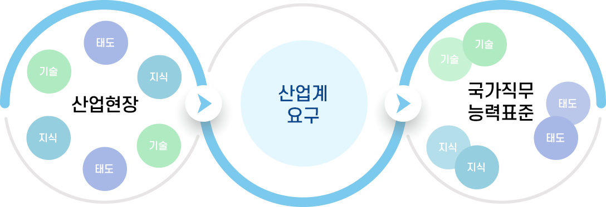

직업역량 진단 서비스
성공적인 취업을 위해 필요한 능력은 무엇일까?
NCS 기반 능력중심 채용이 새로운 채용트렌드로 자리잡으면서,
많은 구직자들은 막연히 자격증, 어학점수 취득을 위해 구직활동을 하는것이 아니라
NCS능력단위별 필요한 SPEC을 똑똑하게 준비하고 있습니다.
NCS 직업역량진단서비스를 통해, 본인이 희망하는직무에 맞는 스펙을 갖추었는지
평가해보고 부족한 부분을 어떤식으로 준비해야할지 진단할 수 있습니다.
국가직무능력표준(NCS, National Competency Standards)은 산업현장에서 직무를 수행하기 위해 요구되는 지식·기술·태도 등의 내용을 국가가 체계화한 것입니다.
 산업계 요구 -> 국가직구능력표준 (기술,기술 태도,태도 지식, 지식)">